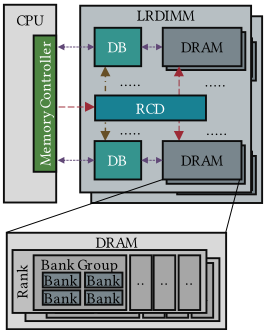
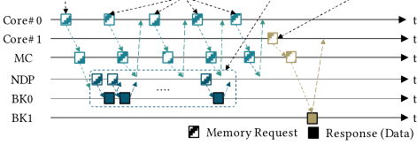
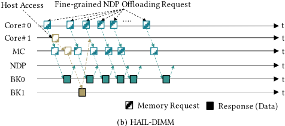
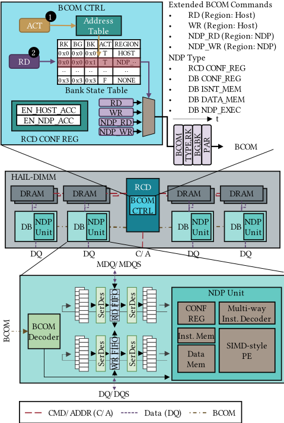
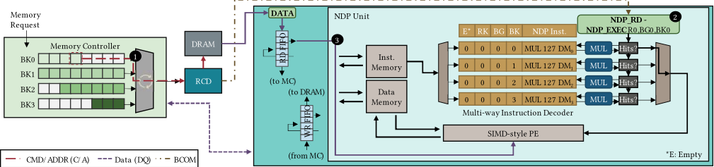
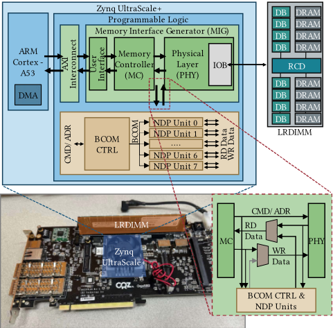
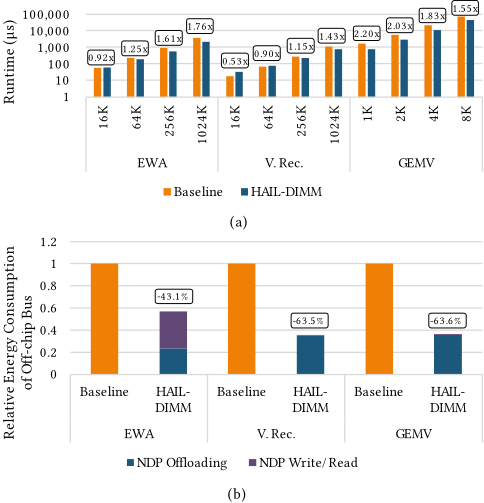
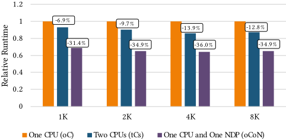

HAIL-DIMM：基于 DIMM 内存系统的主机访问与近数据处理（Near-Data Processing, NDP）交织架构
针对现有 DIMM 侧 NDP 架构在执行 NDP 时因 DIMM 内置 media controller 占用内存总线、阻塞主机访问的问题，论文提出 HAIL-DIMM，一种可作为现有主存 drop-in 替换的 LRDIMM 型 NDP 架构。其核心思路是不让 DIMM 自主发起请求，而是把 NDP 原子操作（DRAM 与 DB 间数据搬运加 DB 内计算）以标准 DDR READ/WRITE 命令形式呈现，由主机 memory controller 依托 bank interleaving 自然交织 NDP 与主机访问；RCD 中扩展的 BCOM 控制器按请求地址区分访问类型，并复用两个 RFU BCOM 命令作为 NDP_RD/NDP_WR，DB 内集成带 multi-way instruction decoder 与 SIMD PE 的 NDP 单元，配合 CPU DMA 实现细粒度 NDP offloading。团队在 Zynq UltraScale+ FPGA 上用 Xilinx MIG 完成了无需修改 memory controller 的原型验证。结果显示 memory-bound 负载最高获得 2.19x 时延加速与 45.4% 数据搬运能耗节省，但 NDP 突发访问仍使主机性能下降 31.4%–36.0%，且当前不支持 ECC 与 rank 级并行。
现有基于 DIMM 的 NDP 架构在 DIMM 上内置 media controller，NDP 加速器执行期间占用内存总线，导致主机访问被限制或阻塞，降低主机负载性能；且 LRDIMM 采用 double-die package（DDP）DRAM、多 rank 共享 I/O，难以给每个 rank 独立内存通道来实现 NDP 与主机访问并行。论文要解决的问题是：构建一种 NDP 使能主存，使 NDP 操作与主机访问能被主机 memory controller 无缝交织调度，同时保持对现有主存模块的 drop-in 兼容以及低成本、低能耗。
HAIL-DIMM 基于 LRDIMM（RCD+DB），仅最小化修改 RCD 与 DB。关键手段：(1) NDP 原子操作（DRAM 到 DB 的数据搬运加 DB 内 NDP 单元计算）通过 DDR READ/WRITE 命令执行，主机 memory controller 视其为普通 DDR 命令，从而利用既有 bank interleaving 自然交织 NDP 与主机访问（类似 HMC 的 atomic operation）；(2) RCD 中扩展 BCOM 控制器，依据 ACT 地址查预定义地址表与 bank state table，把请求分类为 CONF_REG/Inst. Mem/Data Mem/NDP_EXEC，NDP 专用地址空间仅占 128GB LRDIMM 的 0.00047%；复用两个 RFU BCOM 命令作为 NDP_RD/NDP_WR（4 周期序列，受 tCCD 约束）；(3) DB 内 NDP 单元含 multi-way instruction decoder（与 memory controller 重排序后的请求顺序同步）与 SIMD-style PE，时钟频率比 DDR4 DRAM 低 4 倍（DDR5 低 8 倍）以保证数字逻辑可实现性，经 SerDes 与 RD_FIFO/WR_FIFO 相连；(4) 基于 DMA 的细粒度 NDP offloading：以 64B 粒度用 DMA 突发请求（支持 scatter-gather）替代大量 CPU load 指令以节省 CPU 资源，吞吐受 memory controller 地址映射方案（如 RK:RO:CO:BK:BG）影响；(5) 在 Zynq UltraScale+ MPSoC FPGA 上用 Xilinx MIG 搭建原型，BCOM 控制器与 NDP 单元置于 MC 与 PHY 之间，无需修改 memory controller，主机为 ARM A53 并使用 ZDMA 驱动。
摘要：对 memory-bound 负载，相比 baseline 最高 2.19x 时延加速、数据搬运能耗最高节省 45.4%
微基准（ARM NEON 手写优化）：element-wise addition、vector reduction、GEMV 分别最高加速 1.76x、1.43x、2.20x（正文 4.2.1）
off-chip 总线能耗相比 baseline 节省 43.1%–63.6%（正文 4.2.2）
交织影响评估：CPU 与 NDP 同时各跑一个负载（oCoN）时 GEMV 性能比单 CPU 单负载（oC）低 31.4%–36.0%，表明 NDP 突发访问影响主机访问但二者仍可同时进行
NDP 专用地址空间仅占 128GB LRDIMM 的 0.00047%
讨论（future work）：采用 inter-DIMM 广播后，2/4/8 DPC 配置下 GEMV 性能较 1 DPC 提升 1.9/3.8/6.9x
精度设置：HAIL-DIMM 为 FP16，baseline（ARM A53 不支持 FP16）使用 INT16
与以往 DIMM-based NDP（在 DIMM 内置 media controller、由 DIMM 主动发起请求并占用总线，导致 NDP 期间主机访问受限）不同，HAIL-DIMM 把 NDP 操作交由主机 memory controller 以普通 DDR READ/WRITE 调度（借鉴 HMC atomic operation 思想），无需 DIMM 侧自主请求即可利用 bank interleaving 实现 NDP 与主机访问交织；同时仅最小化修改 RCD/DB、不修改 memory controller，可作为现有主存的 drop-in 替换；并提出利用 CPU DMA 生成突发/散射请求的细粒度 NDP offloading 方法以降低 CPU 发起大量 64B 粒度请求的开销。
相关度级别：high
命中能力域：2.1 IP 架构与微架构 | 2.2 RTL 设计与实现 | 2.4 设计验证方法学
理由：论文直接命中 2.1：LRDIMM 架构（RCD/DB/BCOM）、memory controller 调度行为（bank interleaving、地址映射如 RK:RO:CO:BK:BG）与 DDR 协议时序（tCCD、tCL）交互的 DIMM 侧架构设计，与团队 DDR5/MRDIMM 产品线的缓冲器类架构定义高度同源；NDP 单元、multi-way instruction decoder、SerDes 数据通路以及 NDP 单元时钟较 DDR4 低 4 倍/DDR5 低 8 倍的跨时钟设计对应 2.2 的 RTL 实现关注点；基于 Xilinx MIG 与 Zynq UltraScale+、不修改 memory controller 的 FPGA 原型验证方法对应 2.4 的 FPGA 原型能力。对团队而言，该文提供了在不改动主机侧 IP 接口契约的前提下扩展 DIMM 侧功能（地址分区识别请求类型、复用 RFU 命令位）的可复用架构模式。
建议动作：深入精读并做内部分享
Minkyu Lee, Sang-Seol Lee, Kyungho Kim, Eunchong Lee, Sung-Joon Jang ∗
韩国电子技术研究院，韩国 {minkyu.lee,sslee81,kyungho.kim,elee,sjjang0626}@keti.re.kr
近数据处理（NDP）是一种减少主机与存储器之间数据搬运开销的解决方案，其不应干扰主机访问，以确保系统的公平性。我们提出了一种高性价比且高能效的基于 LRDIMM 的 NDP 架构（HAIL-DIMM），该架构能够无缝地交错执行 NDP 与主机访问，并可作为现有主存模块的直接替代品。所提出的 NDP 利用存储器控制器的交错能力，自然地对 NDP 与主机访问进行交错。为了利用 bank 交错，所提出 NDP 的原子操作（由数据搬运与计算组成）会根据请求的地址被存储器控制器识别为 DDR READ/WRITE，而被 HAIL-DIMM 识别为 NDP。我们在现场可编程门阵列（FPGA）平台上实现了所提出 NDP 架构的原型作为概念验证。评估结果表明，对于访存受限工作负载，与基线系统相比，NDP 系统在延迟方面可获得高达 2.19 倍的加速，在数据搬运方面可节省高达 45.4% 的能耗。
关键词：近数据处理，DRAM，双列直插式存储模块
Minkyu Lee、Sang-Seol Lee、Kyungho Kim、Eunchong Lee、SungJoon Jang。2024。HAIL-DIMM：基于 DIMM 的存储系统中主机访问与近数据处理交织（HAIL-DIMM: Host Access Interleaved with Near-Data Processing on DIMM-based Memory System）。载于第 61 届 ACM/IEEE 设计自动化会议（61st ACM/IEEE Design Automation Conference, DAC '24），2024 年 6 月 23 日至 27 日，美国加利福尼亚州旧金山。ACM，美国纽约州纽约，6 页。https://doi.org/10.1145/3649329.3655933
近数据处理（NDP）是一种旨在降低访存受限（memory-bound）工作负载数据搬运开销的技术，这类工作负载具有低时间局部性和低算术强度。对于访存受限工作负载，NDP 能够显著降低数据搬运的延迟和能耗 [2, 10]。在 CPU 系统中，支持 NDP 的存储器被用作主存，同时服务于访存受限工作负载和传统工作负载。因此，NDP 的存储器访问与普通存储器访问（即主机访问）会同时
∗ 通讯作者。
本作品依据知识共享署名 4.0 国际许可协议（Creative Commons Attribution International 4.0 License）进行许可。
ACM ISBN 979-8-4007-0601-1/24/06.
© 2024 版权归所有者/作者所有。
发生。然而，在执行 NDP 期间，主机访问可能被阻塞（例如特定 rank 或整个存储器），这可能会降低主机工作负载的性能。因此，支持 NDP 的主存必须将 NDP 与主机访问交错执行。
本文提出 HAIL-DIMM（Host Access Interleaved with Near-Data Processing on DIMM），这是一种高性价比、高能效的基于 LRDIMM 的 NDP 架构，能够无缝地交错执行 NDP 与主机访问，并可作为现有主存模块的直接替代品。HAIL-DIMM 的核心思想是利用现有存储器控制器的 bank 交错机制来交错执行 NDP 与主机访问。HAIL-DIMM 的一次原子 NDP 操作由从 DRAM 取数至 DB 以及在 DB 的 NDP 单元中进行计算组成，该操作通过 DDR READ/WRITE 命令执行。这类似于混合存储立方（HMC）的原子操作 [8]。从存储器控制器的角度来看，主机访问和 NDP 都是典型的 DDR 命令。因此，NDP 与主机访问由存储器控制器自然地交错执行。此外，我们利用 CPU 的直接存储器访问（DMA）提出了一种针对 HAIL-DIMM 细粒度 NDP 操作的 NDP 卸载方法。我们在 FPGA 平台上实现了所提出 NDP 架构的原型作为概念验证，且无需对存储器控制器进行修改。评估结果表明，对于访存受限工作负载，与基线系统相比，该 NDP 系统在延迟方面可获得高达 2.19 倍的加速，在数据搬运方面可节省高达 45.4% 的能耗。总之，本文的贡献包括：
以往针对支持近数据处理（NDP）的内存的研究，主要聚焦于基于双列直插式内存模块（DIMM）的内存，以服务于需要高内存容量的应用[1, 3-7]。这些NDP架构基于由数据缓冲器（DB）[11]和寄存器时钟驱动器（RCD）[14]构成的负载降低型内存模块（Load-Reduced DIMM, LRDIMM），以便于架构的应用。在基于LRDIMM的NDP架构中，介质控制器被构建在DIMM上，可以自行发出内存请求。尽管NDP单元能够加速内存受限的工作负载，但由于内部内存控制器管理着内存总线，主机访问会受到限制或被阻断。此外，以往的工作已经表明，每个rank都拥有独立的内存通道，因此主机可以访问那些未被NDP单元使用的rank。LRDIMM通常在有限的印制电路板（PCB）面积内采用具有高容量的多rank动态随机存取存储器（DRAM）器件（例如双裸片封装），并且DRAM的各个rank共享I/O。因此，要让LRDIMM的每个rank都拥有独立的内存通道是颇具挑战性的。

CMD/ADDR (CA)
在服务器级CPU系统中，负载降低型内存模块（load-reduced DIMM，LRDIMM）被广泛采用，以获得比普通DIMM（即无缓冲DIMM，Unbuffered DIMM）更高的容量和数据速率。如图1所示，LRDIMM由寄存器时钟驱动器（register clock driver，RCD）、数据缓冲器（data buffer，DB）和DRAM器件组成。RCD在接收到来自内存控制器的命令/地址信号后，将这些信号转发给DRAM，并通过数据缓冲器命令（data buffer command，BCOM）总线对各个DB进行管理。同时，DB在内存控制器与DRAM之间提供数据缓冲。
在CPU系统中，内存系统由多个独立运行的内存通道组成，每个内存通道由一个或多个双列直插式内存模块（dual in-line memory module，DIMM）构成，如图1所示。每个通道的内存控制器管理该通道内的DIMM。在每个通道中，各DIMM共享一条命令/地址总线（command/address bus，C/A）和一条数据总线（data bus，DQ）。DIMM被组织为一个或多个rank，每个rank中的所有DRAM器件以锁步方式运行。DRAM器件由多个bank group组成，每个bank group由独立运行的DRAM bank构成。
内存控制器在满足DRAM器件协议和时序参数的前提下管理内存通道中的DIMM [12, 13]。内存控制器通过重排内存请求来提升内存性能。bank交织（bank interleaving）是其中一种调度技术。为了从DRAM中读取数据，必须先打开一个bank，而这一操作需要较长的等待时间。为了缓解这一延迟，内存控制器会改变内存请求的顺序，以交替访问不同的bank。
许多先前的工作提出了基于DIMM的近数据处理（NDP）架构，以加速访存受限（memory-bound）工作负载 [1, 3-7]。为了高效地执行访存受限工作负载，先前的NDP架构在DIMM上嵌入了媒体控制器（media controller，即内存控制器）。因此，DIMM上的NDP加速器可以直接对DRAM进行读写。这也意味着NDP加速器会占用内存总线，从而在加速器运行期间限制主机访问。
DIMM上的每个rank都拥有独立的内存通道，因此可以通过将部分rank分配给NDP加速器，使NDP与主机访问同时进行。然而，LRDIMM由双裸片封装（double-die package，DDP）DRAM构成，这类DRAM将两个裸片（即两个rank）集成到单个芯片中，以便在受限的PCB面积内实现高内存容量。在这类DRAM中，多个rank共享一条数据总线，无法拥有物理上独立的通道。因此，DIMM上独立内存通道的数量是有限的，NDP期间的主机访问也受到限制。因此，由于NDP与主机访问难以交织，先前的工作并不适合作为CPU系统中支持NDP的主存。
NDP 卸载请求 轮询请求 NDP 执行 主机访问

（a）传统 NDP 架构

HAIL-DIMM 的核心思想是使主机内存控制器中的 NDP 操作能够像主机访问一样被调度，这类似于 HMC 的原子操作 [8]。NDP 操作是一种原子操作，由 DRAM 与 NDP 单元之间的数据移动以及利用这些数据进行的计算组成。该操作通过 DDR READ/WRITE 命令来执行。
图 2 展示了传统 NDP 架构和 HAIL-DIMM 中 NDP 与主机访问的请求流。在传统 NDP 架构中，Core#0 将工作负载卸载给 NDP，而 Core#1 必须等待 NDP 执行完成后才能进行访问。另一方面，在 HAIL-DIMM 中，当 Core#0 向支持 NDP 的内存发送内存请求以卸载细粒度 NDP 操作时，NDP 从 BK0 接收数据并执行该操作。NDP 操作通过接收响应主机内存请求而传递的数据来执行，而无需由 NDP 单元直接生成内存请求。这使得 Core#1 可以向内存发送请求，而不受支持 NDP 的内存中 NDP 操作的影响。
本节其余内容安排如下：我们描述 HAIL-DIMM 的架构。接着，我们介绍一种基于 DMA 的 NDP 卸载方法，以降低 CPU 生成细粒度 NDP 卸载请求的开销。最后，我们描述一个基于 FPGA 的原型，作为 HAIL-DIMM 的概念验证。
HAIL-DIMM 是一种基于 LRDIMM 且支持 NDP 的 DIMM，只需对 RCD 和 DB 进行极少的修改，即可确保与标准 LRDIMM 的兼容性。图 3 展示了 HAIL-DIMM 的架构，其特点是在 DB 中集成了具备计算能力的 NDP 单元。此外，现有的 BCOM 控制器（CTRL）得到增强，能够根据内存请求的地址区分 NDP 访问与主机访问，并对 NDP 单元进行管理。
3.2.1 RCD 中的 BCOM 控制器。原始的 BCOM CTRL 针对DDR READ/WRITE 命令向 DB 发出 BCOM RD/WR 命令。HAIL-DIMM 根据请求的地址将 DDR 命令区分为主机访问或 NDP 操作。NDP 操作的访问类型进一步分为配置寄存器（CONF_REG）、指令存储器（Inst. Mem）、数据存储器（Data Mem）或 NDP 执行（NDP_EXEC）。HAIL-DIMM 利用访问 DRAM 时内存请求的 ACT-READ（或 WRITE）-PRE 序列，根据 ACT 的地址对访问类型进行分类。图 3 展示了 RCD 如何识别内存请求的访问类型。（1）在接收到包含 rank、bank group、bank 和行地址的 ACT 后，RCD 使用地址表中预定义的地址空间确定访问类型，并相应地更新 bank 状态表。为访问专用 NDP 区域（如 CONF_REG）而分配的地址空间非常小（仅占 128GB LRDIMM 的 0.00047%）。其余地址空间被划分为粗粒度区域，每个区域均可配置为主机访问或 NDP 操作。
HAIL-DIMM 扩展了 BCOM 命令集，以便于对 NDP 单元进行控制。原始 BCOM 命令中有两个被留作预留（Reserved for Future，RFU）[14]。HAIL-DIMM 将这两个剩余的命令用作两个 NDP 命令（NDP_RD 和 NDP_WR）。BCOM 命令遵循多周期序列。例如，BCOM RD/WR 需要三个周期，其中包括 rank 地址和奇偶校验位。内存控制器能够以最小间隔 tCCD（即四个 tCK）[12] 发出读或写命令，这使得 BCOM 命令的最大序列长度为四个周期。因此，NDP_RD/WR BCOM 命令的序列占用四个周期。该序列包含 rank、bank group、bank 地址以及 NDP 类型信息，用于控制 NDP 单元。总而言之，（2）当 RCD 接收到 DDR READ（或 WRITE）命令时，它会根据 bank 状态表中的区域信息，向 DB 发出 RD（或 WR）或 NDP_RD（或 NDP_WR）BCOM 命令。

3.2.2 DB 中的 NDP 单元。NDP 单元可以同时执行主机访问和 NDP 操作，其专门设计用于支持 bank 交错（bank-interleaving）以提升 NDP 吞吐量。图 3 展示了 DB 的结构。NDP 单元独立地执行数据搬运和计算操作，与内存控制器和 DRAM 之间的数据通路（RD_FIFO 和 WR_FIFO）并行布置。RD_FIFO/WR_FIFO 与 NDP 单元通过串行器-解串器（SerDes）互连。NDP 单元的时钟频率为 DDR4 DRAM 的四分之一（DDR5 则为八分之一）。由于 DRAM 的时钟频率在 DDR4 中高达 1.6 GHz [12]，在 DDR5 中高达 4 GHz [13]，出于实现可行性的考虑，以数字逻辑实现的 NDP 单元的频率应当降低。

在接收到 NDP EXEC 类型的 NDP_RD BCOM 命令后，NDP 单元对其指令存储器中存储的指令进行译码并执行。HAIL-DIMM 采用多路指令译码器，使 NDP 指令的顺序与内存控制器重排后的内存请求顺序保持同步。图 4 展示了 NDP 单元中 NDP 操作的流程。在此示例中，四条 NDP 指令利用来自四个不同 bank 的数据以及 NDP 单元数据存储器中的数据执行逐元素乘法。指令译码器并行地译码这四条 NDP 指令。主机向四个 bank 发出内存请求，以使用存储在这四个 bank 中的数据执行 NDP 操作。1 内存控制器选择其中一个内存请求，并发出相应的 READ 命令。2 随后，RCD 向 DB 发送 NDP EXEC BCOM 命令。接着，DB 根据 BCOM 命令中指定的 rank、bank group 和 bank 地址选择相应的已译码指令。由于指令译码器的宽度有限，程序员必须谨慎管理同时参与 NDP 操作的 bank 数量。3 在经过指定的延迟（tCL）后，DRAM 将数据传输至 DB，NDP 单元在 SIMD 风格的 PE 上执行运算。总之，考虑内存控制器调度能力的 NDP 单元能够通过 bank 交错充分利用 DRAM 的带宽，从而获得高 NDP 吞吐量。
HAIL-DIMM 的 NDP 操作粒度与 DIMM 的访问粒度相同（即 64B）。HAIL-DIMM 需要许多加载指令，其数据量与 NDP 操作所需的数据量相当。然而，由于每个核心的加载-存储单元表项容量有限，若要背靠背地执行这些加载指令，就必须将它们分发到多个核心上同时执行。这意味着 NDP 卸载需要大量 CPU 资源。因此，本文提出一种细粒度 NDP 卸载技术，利用直接内存访问（DMA）来生成突发内存请求。由于 DMA 生成的内存请求具有连续的地址，连续的 NDP 行为会受到内存控制器地址映射方案的影响。例如，如果地址映射方案为 RK:RO:CO:BK:BG，则相继的内存请求会依次访问所有 bank。凭借其多路指令译码器，HAIL-DIMM 能够通过在多个 bank 之间交错访问来充分支持 NDP 操作。此外，DMA 并不局限于访问连续地址，它还可以利用诸如 scatter-gather 之类的特性来生成多种模式的内存请求。总之，基于 DMA 的细粒度 NDP 卸载能够在节省 CPU 资源的同时，通过高效地向 HAIL-DIMM 发出大量内存请求，显著提升 NDP 吞吐量。

我们在 FPGA 平台上实现了 HAIL-DIMM 的原型系统，作为概念验证。我们使用 Xilinx 的内存控制器 IP——内存接口生成器（Memory Interface Generator, MIG）——来验证 NDP 操作，而无需对内存控制器进行修改。图 5 展示了在配备 LRDIMM 的 FPGA 上的原型实现。为了拦截 MIG 发送给 LRDIMM 的 DDR 命令，HAIL-DIMM 的 BCOM 控制器和 NDP 单元被置于 MIG 的内存控制器（Memory Controller, MC）与物理层（Physical Layer, PHY）之间。该原型从 MC（或 DRAM）接收数据以及已调度的 DDR 命令，并模拟 NDP 操作。NDP 操作的结果可以通过 RD Data Bus 传递给主机。该原型使用 Zynq FPGA 平台中的 ARM A53 处理器 [16] 来生成内存请求，以控制 HAIL-DIMM。
我们在基于 ARM 的 CPU 系统上评估 HAIL-DIMM 的性能与能耗，其中包括 HAIL-DIMM 的原型。表 1 展示了评估环境的详细信息。基线 CPU 系统由配备 LPDDR4 的 ARM A53 处理器组成。然而，由于 LRDIMM 通过可编程逻辑（Programmable Logic, PL）接口与 CPU 相连，其过长的访问延迟使其不适合作为基线系统的主存。在 HAIL-DIMM 系统中，主机处理器使用 Xilinx 的 ZDMA 驱动将 NDP 操作卸载到 HAIL-DIMM [16]。两种系统中片外总线的能耗模型均参照 [6] 进行建模。该能耗模型假设两种系统均使用 LRDIMM。我们使用访存受限（memory-bound）的微基准测试来评估两种系统的性能与能耗。这些微基准测试是使用 ARM NEON 指令进行优化的手写代码 [9]。HAIL-DIMM 的精度为 FP16，而 ARM A53 不支持 FP16，因此为了使用相同数量的数据，基线基准测试的数据类型为 INT16。
| 0 | 1 | 2 |
|---|---|---|
| PS | CPU | Quad-core ARM Cortex-A53 1.5GHz |
| PS | DMA | Xilinx's ZDMA |
| PS | DRAM | 4GB LPDDR4-3200 (6.25 GB/s) |
| PS-PL Interface | PS-PL Interface | Xilinx's FPD AXI Master Bus (4.68 GB/s) |
| PL | Memory Controller | Xilinx's MIG (12.5 GB/s) |
| PL | HAIL- DIMM | BCOM CTRL, 8 NDP units, FP16x4 SIMD unit per NDP unit |
| PL | DIMM | LRDIMM 64GB DDR4-2400 |
| 0 | 1 | 2 |
4.2.1 性能。在图 6 (a) 中，我们对向量和矩阵的规模进行了扫描。HAIL-DIMM 系统在逐元素加法、向量归约和矩阵-向量乘法（GEMV）上分别取得了最高 1.76 倍、1.43 倍和 2.20 倍的加速。在向量规模较小时，基线系统在向量运算方面优于 HAIL-DIMM 系统，这是因为 HAIL-DIMM 系统使用直接内存访问（DMA）进行近数据处理（NDP）卸载，需要花费大量时间来准备 DMA。如果 CPU

系统与 HAIL-DIMM 使用相同的 DIMM，由于两者的片外带宽相同，两者在访存受限应用上的峰值性能也相同。然而，要在 CPU 系统中充分利用片外带宽，必须利用大量进程。另一方面，HAIL-DIMM 通过采用基于 DMA 的 NDP 卸载技术，无需占用大量 CPU 资源即可利用足够的内存带宽。
4.2.2 片外总线的能耗。如图 6 (b) 所示，与基线相比，HAIL-DIMM 实现了 43.1% 至 63.6% 的能耗节省。由于主机与 DIMM 之间的数据搬运量更少，HAIL-DIMM 系统在向量归约或 GEMV 上比逐元素加法实现了更高的能耗节省。DIMM 上数据缓冲器（DB）与 DRAM 之间数据搬运的能耗低于内存控制器与 DB 之间数据搬运的能耗 [6]。因此，HAIL-DIMM 系统通过在 DB 中的 NDP 单元上执行操作并减少向主机的数据搬运，能够有效节省片外总线上的能耗。
4.2.3 主机访问与 NDP 操作的交织。为了评估 HAIL-DIMM 的突发访问对主机访问的影响，我们按照与 NDP 操作相同的模式向基线的主存发出内存请求。图 7 展示了执行 NDP 操作时 CPU 上 GEMV 的性能。在一个 CPU 和一个 NDP 上运行两个工作负载（oCoN）的性能比在单个 CPU 上运行单个工作负载（oC）低 31.4% 至 36.0%。这表明，尽管为 NDP 操作进行的突发内存访问会影响主机访问，但在 NDP 操作期间同时访问仍然是可行的。此外，在访问同一 bank 时关闭再重新打开该 bank 的开销相当可观，会导致显著的性能下降。因此，如果将主机访问和 NDP 分配到不同的 rank，则可以通过缓解这种延迟开销来减少性能下降。

本文提出了 HAIL-DIMM，它能够将近数据处理（NDP）与主机访问无缝交错执行，并提出了一种基于直接存储器访问（DMA）的高效 NDP 卸载方法，以支持细粒度的 HAIL-DIMM 操作。我们在现场可编程门阵列（FPGA）平台上实现了 HAIL-DIMM 原型，以评估其可行性与性能。评估结果表明，对于访存受限工作负载，所提出的 NDP 架构相比基于 CPU 的系统实现了性能提升与能耗节省。